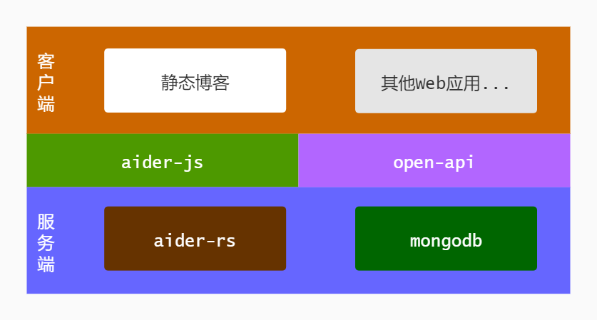

介绍
Aider - 轻量的网站热门文章组件，为静态网站。
架构图

描述
Aider服务端基于Rust和MongoDB开发。网站接入aider-js后会采集网页浏览数据，通过render函数将浏览量排名前8条（可配置，最大支持20条）数据渲染到页面中。 提供两种接入方式： 一种是在页面嵌入Aider提供的.js脚本文件； 另外一种是使用open-api接入，需要自己处理数据逻辑，此种接入方式需要编程基础。
推荐！在页面嵌入Aider提供的.js脚本文件
<script src='//unpkg.com/aider@1.0.0/dist/Aider.min.js' charset="UTF-8"></script>
<script>
var aider = new Aider({
"site_id": "site_id"
});
aider.render(document.getElementById('aider'));
</script>
site_id申请请联系QQ邮箱36634584。请在邮件正文中说明网站名称和URL地址。
修改默认样式
如果想修改符合自己网站主题的样式，请参考下面css代码：
.aider-hot-list {
padding: 20px;
background: #fff;
}
.aider-hot-list li {
height: 30px;
line-height: 30px;
white-space:nowrap;
overflow: hidden;
text-overflow:ellipsis;
}
.aider-hot-list li a {
color: #333;
}
@media (min-width: 768px) {
.aider-hot-list ul::after {
content:".";
display:block;
clear:both;
height:0;
visibility:hidden;
}
.aider-hot-list li {
width: 50%;
float: left;
}
}关于隐私
网站接入：只需提供网站名称、网站URL
数据采集：Aider仅采集标题、网页URL、点击量。不会采集IP、Cookies。